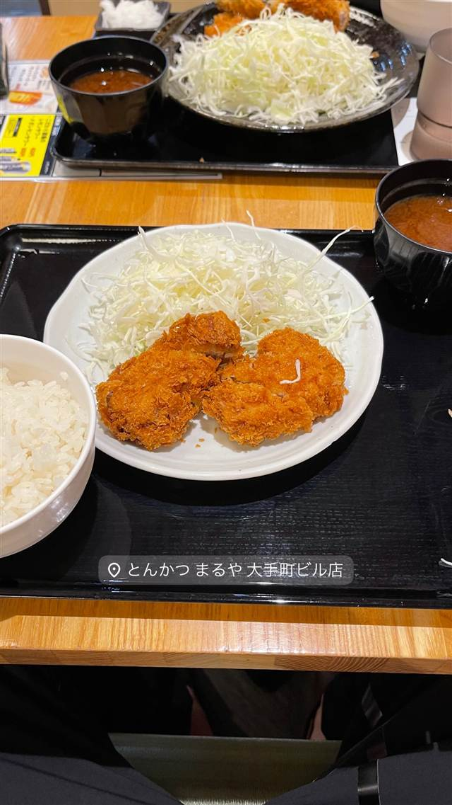

名代とんかつ かつくら 東急百貨店たまプラーザ店
ご飯もキャベツも味噌汁もおかわり自由、京都発のとんかつ
名代とんかつ かつくら
「名代とんかつかつくら」は1994年に京都で創業した老舗とんかつチェーン。京料理の伝統を活かした仕立てで知られ、ご飯・キャベツ・味噌汁がすべておかわり自由なことでも人気を集めている。たまプラーザ店は東急百貨店内にある支店。
TRIVIA
へえ、という話
- キャベツ・ご飯・味噌汁はすべておかわり自由
- とんかつソースに赤ワインやりんご、デーツを使用
- 揚げ油はコレステロールゼロ仕様
| 創業 | 1994年4月に京都「四条店」でチェーン創業（三条本店は1995年7月開店） |
|---|---|
| 系譜 | 京都発祥の老舗とんかつチェーン。現在は東京・神奈川・熊本など全国に20数店舗を展開 |
| 看板 | ロースかつ・ひれかつ定食 |
| こだわり | 高オレイン酸菜種油をブレンドしたコレステロールゼロの揚げ油、厳選した国産米、赤出汁の味噌汁、赤ワインとりんご・デーツを効かせた特製とんかつソース |
| 予算 | 昼 ～¥1,999 夜 ¥2,000～¥2,999 |
| 場所 | たまプラーザ 神奈川県横浜市青葉区美しが丘1-7 東急百貨店たまプラーザ店5F |
| 注意 | キャベツ・ご飯・味噌汁がすべておかわり自由。たまプラーザ店は東急百貨店たまプラーザ店5F内にある支店 |
食べたもの：とんかつ定食
NEARBY
近い店・同じ系統の店
-
 パスタ たまプラーザ
ItalianLodge TEN（イタリアンロッジ テン）
山小屋風の隠れ家で味わう揚げナスのせ自家製ミートソースパスタ
昼 ¥1,000～¥1,999 夜 ¥4,000～¥4,999
パスタ たまプラーザ
ItalianLodge TEN（イタリアンロッジ テン）
山小屋風の隠れ家で味わう揚げナスのせ自家製ミートソースパスタ
昼 ¥1,000～¥1,999 夜 ¥4,000～¥4,999
-
 ハワイ たまプラーザ
メレンゲ たまプラーザ店（Merengue）
メレンゲ使用のふわふわパンケーキとロコモコが名物のハワイアン
昼 ¥1,000～¥1,999 夜 ¥1,000～¥1,999
ハワイ たまプラーザ
メレンゲ たまプラーザ店（Merengue）
メレンゲ使用のふわふわパンケーキとロコモコが名物のハワイアン
昼 ¥1,000～¥1,999 夜 ¥1,000～¥1,999
-
 サラダ たまプラーザ駅
Petite Notes（プティットノット）
花屋併設のアンティーク調カフェで味わうキッシュとサラダ
昼 ¥1,000～¥1,999 夜 ¥1,000～¥1,999
サラダ たまプラーザ駅
Petite Notes（プティットノット）
花屋併設のアンティーク調カフェで味わうキッシュとサラダ
昼 ¥1,000～¥1,999 夜 ¥1,000～¥1,999
-

とんかつ 大手町駅(C7出口) とんかつ まるや 大手町ビル店 『日本一のとんかつ屋』を掲げる、低価格高品質のとんかつ定食 昼 ～¥999 夜 ¥1,000～¥1,999 -
 とんかつ 両国
とんかつ はせ川 両国店
大門の名店『むさしや』仕込み、三元豚のとんかつがビブグルマン4年連続
とんかつ 両国
とんかつ はせ川 両国店
大門の名店『むさしや』仕込み、三元豚のとんかつがビブグルマン4年連続
-
 とんかつ 旭橋駅
豚々ジャッキー
あぐー豚とやんばる島豚だけを使うとんかつ、引き戸の奥の隠れ家
とんかつ 旭橋駅
豚々ジャッキー
あぐー豚とやんばる島豚だけを使うとんかつ、引き戸の奥の隠れ家